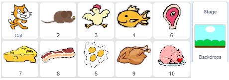

Liste¶
U programima koje smo stvorili u prethodnim lekcijama koristili smo samo jednostavne tipove podataka - svaka varijabla zadržavala je vrijednost jednog podatka. Međutim, često je potrebno pohraniti čitav niz podataka pod jednim imenom, na primjer, skup brojeva. Ako želimo pohraniti telefonske brojeve naših 10 prijatelja, trebali bismo stvoriti 10 varijabli, što nije baš lako održavati, pa na Scratchu koristimo složenu vrstu podataka zvanu lista.
Što je lista?
Lista je složena varijabla koja se sastoji od više elemenata - više varijabli. To mogu biti različite vrste podataka, u ovom su primjeru nizovi. Stvara se slično kao što se stvaraju obične varijable.
U grupi Varijabla kliknite gumb Izrada lista.
U dijaloškom okviru koji se pojavi unesite naziv lista i potvrdite klikom na gumb U redu.

Na pozornici će se pojaviti prazan monitor lista kojem na dnu liste piše da lista trenutno ima duljinu 0.
Klikom na znak “+” koji se nalazi u donjem lijevom kutu, otvara se okvir za unos prvog elementa i povećava se duljina popisa za 1.
U prazno polje treba unijeti prvi element liste.

Ponavljanjem ovog postupka može se unijeti željeni broj elemenata lista.
Istodobno se u paleti blokova pojavljuju blok povezan s listom i 11 ostalih blokova koji omogućuju upotrebu lista i njegovih elemenata u programu.

 Prouči sljedeće primjere projekata¶
Prouči sljedeće primjere projekata¶
Projekt Quiz sadrži listu pitanja i listu točnih odgovora. Pitanja i odgovore možete unaprijed unijeti ručno ili ih pročitati iz tekstualne datoteke. Korisniku se nasumično postavljaju pitanja i provjerava se točan odgovor. Ako je tako, dobiva bod, ako ne - treba mu se reći točan odgovor. Na kraju, na osnovu broja točnih odgovora, može se dati ocjena.
Primjer 1 – Projekt “Quiz”¶
U ovom ćemo primjeru ilustrirati kako se može napraviti matematički kviz. Kviz provjerava da sudionici mogu odrediti najvećeg zajedničkog djelitelja po dva ili tri broja. Pitanja su navedena na Listi Numbers, a odgovori su na popisu GCD (najveći zajednički djelitelj). Za prolazak kroz liste koristimo varijablu k čija se vrijednost mijenja od 1 do 8 (broj elemenata popisa), a broj točnih odgovora spremljen je u varijablu b.

Slijedi prikaz skripte ovog projekta.

Sljedeći projekt ilustrira kako se stavke na listi mogu nasumično birati. Koristit ćemo reporter koji vraća vrijednost elementa liste čiji je redni broj upisan u polju ordinalnog broja. Dakle, ako nasumično generiramo varijabilni broj, stavljanjem u polje rednog broja dat će nam se element popisa koji se nalazi na tom položaju. Projekt je također pokazao kako se brojevi nasumično generirani mogu koristiti za širenje različitih poruka.
Primjer 2 – Projekt “Hunger”¶
Projekt uključuje 10 likova - gladnu mačku i 9 vrsta hrane o kojima mačka mašta.
{kind=link}
Mačka se kreće lijevo i desno, te “razmišlja” 3 sekunde o jednoj od 11 nasumično odabranih rečenica iz liste rečenica hrana.
{kind=link}
U vrijeme dok se vidi naredba  , u bijelom polju na sredini pozornice pojavljuje se hrana koju mačak zamišlja.
, u bijelom polju na sredini pozornice pojavljuje se hrana koju mačak zamišlja.

Usklađivanje izgleda hrane i mačjih mašta vrši se putem poruka.
Naime, varijabla broja, koja se nasumično generira, koristi se za odabir rečenice s liste food i generiranje poruke “1” do “11”. Nitko ne odgovara na poruke “1” i “11”, a likovi čija su imena ti brojevi odgovaraju na poruke od “2” do “9”.
Na primjer, miš koji je “2” odgovara na “2”, ptica koja je “3”, odgovara na “3” i tako dalje.

Reakcija svakog lika je ista: pojavljuju se dvije sekunde dok se ne vidi mačji oblak razmišljanja, a zatim se ponovo sakriju. Svi likovi (osim mačke) nakon klika na zelenu zastavicu prijeđu na položaj (0,110) u sredinu bijelog oblaka i sakriju se.
Sve skripte povezane s glavnim junakom ovog projekta prikazane su na sljedećoj slici.

Sljedeći projekt ilustrira kako možemo sve predmete podijeliti u skupine poželjnih, nepoželjnih i neutralnih. Popis želja vodi se na jednoj listi, a nepoželjan na drugom. Kad je objekt odabran, on se provjerava kakav jest: ako je poželjan, dobivaju se pozitivne bodove, ako su negativne, a ako je neutralan, broj bodova se ne mijenja. Na primjer, ovo bi mogla biti strategija ako napravite igru mališana gdje treba prikupiti što više korisnih predmeta, ali izbjegavati opasne predmete, (vidi projektne zadatke).
Primjer 3 – Projekt “Food”¶
Scenarij projekta
Glavna junakinja ovog projekta, djevojčica Zara, za vrijeme školskih praznika može pojesti nešto od hrane, popiti vodu ili uzeti poklon. Odaberete što će Zara poduzeti klikom na stvari koje se pojavljuju na pozornici. Ako odaberete hranu koja se uzgaja - sendvič, smokve ili krafne, dobivate negativne bodove. Ako odaberete voće - naranču, bananu ili jabuku, dobit ćete pozitivne bodove. Uzimanje vode ili darova ne donosi vam nikakve bodove.

Nazivi predmeta koji donose pozitivne bodove nalaze se na jednoj listi (u našem „voću“), a oni koji donose negativne na drugoj (u našoj „nezdravi“).
Ponašanje likova
Sve stavke imaju isto ponašanje. Nakon klika na zelenu zastavicu, oni se pojavljuju u nasumičnom položaju s desne strane pozornice. Kada se klikne, promjenljivoj hrani dodijele im ime, deklariraju poruku taken i sakriju.

Skripte pridružene Zari omogućuju izračunavanje broja bodova u zavisnosti od toga koja je hrana izabrana.

Primjer 4 – Projekt “Clumsy Wizard”¶
Glavni lik ove igre je čarobnjak Clumsy Wizard-a. Svoj čarobni štapić može koristiti za višestruke kopije iste stvari, ali često se zbunjuje i zaboravlja točno koliko je obećao, pa učini nešto više ili manje.
Tu je i njegova pomoćnica, Wizard Girl, koja pažljivo prati što je Clumsy Wizard obećao i koliko primjeraka je napravio, pa mu zamjera što je pogriješio.

Kako Clumsy Wizard obećava različite stvari
Da bi Clumsy Wizard obećao stvari, stvara se lik čiji su kostimi različiti predmeti. Pored toga, napravljena je lista s imenima tih predmeta. U našem projektu stvorili smo lik koji se zove Creature koji se može pojaviti u 5 različitih kostima.

Kako bi Clumsy Wizard mogao izgovarati imena kostima, uveli smo popis kojem smo dali stvari s imenima i u njega stavili 5 imena kostima (u množini). Nasumično se generira broj između 1 i 5, a zatim Čarobnjak nespretnosti izgovara rečenicu koja povezuje tekst „Sada ću napraviti“ i odgovarajući element ovog popisa. Na primjer, ako se generira broj 2, nespretni čarobnjak će reći “Sad ću napraviti jabuke”, a ako se generira broj 4, reći će “sada ću napraviti leptire”.
Sljedeća slika prikazuje skriptu koja opisuje ponašanje čarobnjaka kad se na njega klikne. Vrijednost varijabilnog broja prvo se generira kao slučajni broj iz intervala [1,5]. Čarobnjak, u rečenici koju potom izgovara, kaže da će stvoriti jedan od kostima lika Creature, onaj koji je naveden na listi pod serijskim brojem jednakim generiranom broju. Zatim objavljuje poruku Show off, na koju Wizard Girl reagira pitajući koliko kopija stvorenja Clumsy Wizard će stvoriti u roku od 2 sekunde. Zato se u skriptu čarobnjaka uvodi naredba čekaj 2 sekundi. Nakon ovog prekida, čarobnjak generira vrijednost varijable how iz intervala [1,10]. Kako su dimenzije kostima lika Creature postavljene na oko 50x50 piksela, za maksimalni broj instanci stvorenja koje će “stvoriti” Clumsy Wizard odabrali smo broj 10. Ovako se na pozornici vide svi primjeri. Clumsy Wizard govori koliko će kopija stvoriti i proglašava poruku za stvaranje.

Sljedeća slika prikazuje skripte koje opisuju ponašanje Wizard Girl. Odgovara na obje čarobnjačke poruke i također deklarira samu poruku sakrivanja 4 sekunde nakon primanja poruke za stvaranje. Poruka o skrivanju signal je stvorenju da ukloni svoje klonove i sebe sa pozornice.

Sljedeća slika prikazuje skripte koje opisuju ponašanje lika Creature. Ovaj lik reagira na 4 događaja: klikom na zelenu zastavicu, deklaracijom za stvaranje i sakrivanje poruka i događajem kloniranja. Kada se klikne zelena zastavica, lik se sakriva, a nakon primitka poruke, vrijednost se mijenja u sljedeću varijablu. Ova je varijabla, za razliku od globalnog broja i kako varijable koje mogu koristiti svi znakovi, stvorena samo za znak Creature, tako da je lokalna varijabla. Karakteristika lokalnih varijabli je da se njihova vrijednost može mijenjati samo lik za koji su stvoreni. Ostali likovi mogu vidjeti njihove vrijednosti, ali ne mogu ih promijeniti. Kao okidač koristi se sljedeća varijabla. Kad se njegova vrijednost promijeni iz 0 (kao što je postavljeno na početku odgovora na poruku za stvaranje) u 1, ona uništava klonove i nestaje.

Kako Clumsy Wizard prikazuje različite brojeve likova
Ostaje objasniti kako nespretni čarobnjak može prikazati više primjeraka lika (to je kostim lika Creature). U tu svrhu koristi kloniranje likova. Već smo pokazali da se lik (i sve skripte povezane s njim) mogu duplicirati u vrijeme kreiranja programa. Umnožavanje se vrši odabirom opcije duplikata s izbornika prečaca koji se desnim klikom na lik nalazi na popisu likova. Na Scratchu postoji i mogućnost umnožavanja likova tijekom izvođenja programa. (Slično uvrštavanju elemenata u vrijeme stvaranja i izvršavanja programa.)
Upute se koriste za kloniranje lika i upravljanje ponašanjem klona i  iz grupe Control. U skripti koja opisuje ponašanje bića kad primi čarobnjaka za stvaranje, lik se prikazuje na lijevom rubu zaslona, a zatim se stvaraju i prikazuju njegovi klonovi. Svaki se klon prikazuje na udaljenosti od 50 koraka od prethodnog, tako da stoje jedan pored drugog u nizu. To se realizira u petlji koja ponavlja kako-1 puta, što zajedno s izvornim znakom dobiva obećani broj primjeraka lika. Kako je sljedeća varijabla lokalno liku klona, svaki njegov klon ima svoju vrijednost za ovu varijablu i svaki se prikazuje na pozornici sve dok sljedeća varijabla ne dobije vrijednost 1 (kada lik primi skrivenu poruku). Tada se svaki klon očisti, a izvorni lik se sakrije.
iz grupe Control. U skripti koja opisuje ponašanje bića kad primi čarobnjaka za stvaranje, lik se prikazuje na lijevom rubu zaslona, a zatim se stvaraju i prikazuju njegovi klonovi. Svaki se klon prikazuje na udaljenosti od 50 koraka od prethodnog, tako da stoje jedan pored drugog u nizu. To se realizira u petlji koja ponavlja kako-1 puta, što zajedno s izvornim znakom dobiva obećani broj primjeraka lika. Kako je sljedeća varijabla lokalno liku klona, svaki njegov klon ima svoju vrijednost za ovu varijablu i svaki se prikazuje na pozornici sve dok sljedeća varijabla ne dobije vrijednost 1 (kada lik primi skrivenu poruku). Tada se svaki klon očisti, a izvorni lik se sakrije.

Clumsy Wizard2 nadogradnja projekta
Ideja je da čarobnjak ne stvori onoliko predmeta koliko je obećao, već nešto više ili manje. Korisnik bi trebao reći koliko ili manje objekata koje je čarobnjak stvorio, tj. Dijete treba naučiti dodavati i oduzimati brojeve do 10. To se postiže generiranjem varijable pogreške, čiji cijeli brojevi mogu biti cijeli brojevi iz intervala [-3,3]. Naravno, ako se stvori pogreška od 0, čarobnjak će stvoriti točno onoliko objekata koliko je obećao, ali u drugim će slučajevima biti potrebno utvrditi koliko je objekata napravio. Sljedeća slika prikazuje neke od slučajeva zbrke čarobnjaka.

Ponašanje lika opisuje sljedeća skripta.

Slijedi skripta koja opisuje ponašanje Wizard Girl.

Spremite ovaj projekt kojeg ćete nazvati Clumsy Wizard2.
Spremite ovaj projekt kojeg ćete nazvati Clumsy Wizard2. u skriptu male čarobnice umjesto zadrške blokom  . Tek kada dijete da odgovor, pritisnut ćemo tipku Enter i provijeriti odgovor.
. Tek kada dijete da odgovor, pritisnut ćemo tipku Enter i provijeriti odgovor.
 Odgovori na sljedeća pitanja¶
Odgovori na sljedeća pitanja¶
Za sva pitanja koja slijede podrazumjeva se da lista na početku ima sljedeće elemente.

Pitanje 1¶
- lista će imati jedan element manje +
- na prvom mjestu nalazit će se element naranče +
- element se prebacuje na kraj liste
- izbacuje se posljendji element liste
Q-43: Što je rezultat izvršenja naredbe  ? (Izaberi sve točne odgovore))
? (Izaberi sve točne odgovore))
Pitanje 2¶
- element će biti dodan na početak liste
- Ova naredba dodaje se na kraju liste.
- element će biti dodan na kraj liste +
- Točno.
- element će biti dodan pod uvjetom da prethodno nije bio u listi
- Ne vrši se provjera.
Q-44: Što je rezultat izvršenja naredbe ?
Pitanje 3¶
- niti jednom
- Lista ima 3 elementa.
- jednom
- Lista ima 3 elementa.
- 2 puta
- Lista ima 3 elementa.
- 3 puta +
- Točno.
Q-45: Koliko će puta lik izgovoriti “I like fruit”?

Pitanje 4¶
- -
- +
- +
Q-46: Koje nardbe će u listu fruit postaviti element strawberry na poziciju 2? (Izaberi sve točne odgovore)

Pitanje 5¶
- +
- +
- -
Q-47: Poslije izvršenja kojih naredbi će se povećati broj elemenata liste? (Izaberi sve točne odgovore)
Pitanje 6¶
- Ako je lista elemenata strawberry, njena veličina se neće promijeniti, a ako nije, dodaje strawberry na kraj liste. +
- Točno.
- Bez obzira da li je u listi postojao element strawberry, dodat će ga na kraj liste
- Unos liste vrši se ako lista prethodno nije imala element jagoda.
- Ako je lista imala strawberry, njena veličina se neće promijeniti, a ako nije, dodaje strawberry na početak liste
- Ako je dodan, bit će dodan na kraj liste.
Q-48: Što je rezultat izvršenja sljedećih naredbi?

 Pokušaj!¶
Pokušaj!¶
U prve tri vježbe pretpostavlja se da imamo listu original čiji su elementi redom brojevi od 1 do 10.
Vježba 1¶
Napiši skriptu koja kreira listu duplikat i u nju upisuje sve elemente postojeće skripte original.
Vježba 2¶
Napiši skriptu koja kreira listu unazad i u nju upisuje sve elemente postojeće liste original obrnutim redosljedom, tj. prvi element liste unazad treba biti posljednji element liste original, drugi – predposljednji iz liste original i tako sve do prvog elementa liste original koji treba biti posljednji u listi unazad.
Vježba 3¶
Napišti skriptu koja kreira listu parni i u nju upisuje svaki drugi element postojeće liste original.
Vježba 4¶
Napiši skriptu koja kreira listu slučajni 1 i u nju upisuje 10 brojeva iz interval [1,100] generiranih operacijom slučajan broj.
Vježba 5¶
Napiši skriptu koja kreira listu slučajni 2 i u nju upisuje 10 RAZLIČITIH brojeva iz interval [1,100] generiranih operacijom slučajni broj.
 Ispravi greške!¶
Ispravi greške!¶
Greška 1¶
Učenik je želio promijeniti Primjer 3 ovog poglavlja tako da se u novu listu pojedeno upisuju nazivi hrane koje Zara izabere. Zari je pridružio skriptama za kretanje pomoću tipki sa strelicama i skripte prikazane na sljedećoj slici. Na slici su i skripte u prilogu drugih likova projekta. Većina događanja odvijala se onako kako je student priželjkivao, ali jabuku i naranču nikako nije bilo moguće nabrojati. Što je pogreška?
{kind=link}
 Što smo naučili¶
Što smo naučili¶
U ovoj lekciji naučili smo kako se na Scratchu koriste popisi - vrsta podataka složene strukture koja omogućuje pohranjivanje više vrijednosti odjednom. Vidjeli smo da elementi popisa mogu biti različite vrste podataka i da se mogu, između ostalog, upotrijebiti za odabir jednog odijela kostima ili za odabir jednog od likova s popisa likova. Kroz primjere projekata, ilustrirali smo i složenu sinkronizaciju višestrukih likovnih ponašanja pomoću poruka. Također smo pokazali kako se likovi mogu programsko množiti i kako se klonovi mogu ponašati na različite načine ako lik koji ih je stvorio ima svoje lokalne varijable.
Primjeri projekta: 9Studio
Novi pojmovi: lista, element liste, klon.
Nove naredbe:  -
-  , ,
, ,  ,
,  ,
,  ,
,  ,
,  ,
,  ,
,  , .
, .
 - , ,
- , ,  .
.
 Napravi neki od sljedećih projekata¶
Napravi neki od sljedećih projekata¶
Projekt 1 – “Kviz iz povijesti!”¶
Učitajte listu pitanja iz tekstualne datoteke.
Korištenjem programa Notepad ispiši listu pitanja iz povijesti, svako u zasebnom redu.
Korištenjem programa Notepad ispiši listu pitanja iz povijesti, svako u zasebnom redu.

U Scratchu napravi listu pod nazivom pitanja
Desnim klikom na monitoru liste otvori padajući izbornik i izaberi opciju import
{kind=link}
U polje za ime datoteke upišite Povijest
U vašoj listi pojavit će se lista pitanja koja ste predhodno stavili u Notepad.

Zatim stvorite listu točnih odgovora, zatim skriptu koja nasumično odabire pitanje s liste pitanja, pita korisnika za odgovor i uspoređuje ga s ispravnim odgovorom. Ako je korisnik odgovorio ispravno, povećajte broj bodova.
Projekt 2 – “Telefonski imenik”¶
Napravite tri liste imena svojih prijatelja, rođendana i brojeva telefona. Napišite skriptu koja provjerava da li se ime koje unosite s unosa nalazi na listi imena. Ako je ime na listi, treba se prikazati datum rođenja i telefon osobe čije je ime upisano, a ako ne, trebala bi se prikazati odgovarajuća poruka.
Projekt 3 – “Blizanci”¶
Stvorite procedure za povezivanje s projektom Blizanci.
Postupak provjere trebao bi provjeriti da je broj naveden kao parametar glavni.
Postupak obrasca trebao bi formirati slobodnu listu u koji treba unijeti sve jednostavne brojeve iz intervala [2,1000].
Glavni program treba prikazati sve brojeve (primarne brojeve koji se razlikuju po 2) iz intervala [2,1000].
Projekt 4 – Igra “Opasni predmeti”¶
Napravite igru u kojoj će korisnik (dijete) iz skupine predmeta trebati odabrati nekoliko stvari koje nisu opasne. Nazivi (ili redoslijedni brojevi kostima, kao u primjeru 4. ovog poglavlja) opasnih predmeta na pozornici trebaju se upisati u listu opasnih. Objekti se biraju klikom na njih. Potom se provjerava je li predmet na listi opasnosti. Za odabir neopasnog predmeta dobiva se pozitivna točka, a za odabir opasnog predmeta negativna točka. Cilj je prikupiti najmanje 3 (recimo od 5 mogućih) bodova. Tada igra završava ili prelazi na sljedeću razinu.
The game can have multiple levels, for example, dangers in the kitchen (knife, bowl with boiling water fire, etc.), dangers in the backyard, nature, etc.